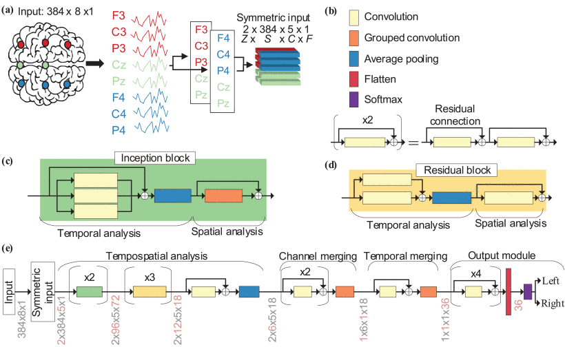

braindecode.models.EEGSym#
- class braindecode.models.EEGSym(n_chans=None, n_outputs=None, n_times=None, chs_info=None, input_window_seconds=None, sfreq=None, filters_per_branch=8, scales_time=(500, 250, 125), drop_prob=0.25, activation=<class 'torch.nn.modules.activation.ELU'>, spatial_resnet_repetitions=1, left_right_chs=None, middle_chs=None)[source]#
EEGSym from Pérez-Velasco et al (2022) [eegsym2022].
Convolution Channel

The EEGSym is a novel Convolutional Neural Network (CNN) architecture designed for Motor Imagery (MI) based Brain-Computer Interfaces (BCIs), primarily aimed at overcoming inter-subject variability and significantly reducing BCI inefficiency [eegsym2022].
The architecture integrates advances from Deep Learning (DL), complemented by Transfer Learning (TL) techniques and Data Augmentation (DA), to achieve strong performance in inter-subject MI classification [eegsym2022].
Architectural Overview
EEGSym systematically incorporates three core features:
Inception Modules for multi-scale temporal analysis [eegsym2022].
Residual Connections maintain spatio-temporal signal structure and enable deeper feature extraction [eegsym2022].
A Siamese-network design exploits the inherent symmetry of the brain across the mid-sagittal plane [eegsym2022].
Macro Components
- EEGSym.symmetric_division (Input Processing)
- Operations. The input is virtually split into left, right, and middle channels.
Middle (central) channels are duplicated and concatenated to both left and right lateralized electrodes to form the two hemisphere inputs [eegsym2022].
- Role. Prepares the data for the siamese-network approach,
reducing the number of parameters in the spatial filters for the tempospatial analysis stage [eegsym2022].
- EEGSym.inception_block (Tempospatial Analysis - Temporal Feature Extraction)
Operations. Uses
_InceptionBlockmodules, which apply parallel temporal convolutions with different kernel sizes (scales) [eegsym2022]. This is followed by concatenation, residual connections, and average pooling for temporal dimensionality reduction [eegsym2022].Role. Captures detailed temporal relationships in the architecture, similarly to
EEGInceptionMI[eeginception2020]. The first block uses large temporal kernels (e.g., 500 ms, 250 ms, 125 ms) [eegsym2022].
- EEGSym.residual_blocks (Tempospatial Analysis - Spatial Feature Extraction)
Operations. Composed of multiple
_ResidualBlockmodules (typically three instances) [eegsym2022]. Each block applies temporal convolution, pooling, and a spatial analysis layer (convolution or grouped convolution) [eegsym2022].- Role. Enhances spatial feature extraction by incorporating residual
connections across all CNN stages, which helps maintain the spatio-temporal structure of the signal through deeper layers [eegsym2022].
- EEGSym.channel_merging (Hemisphere Merging)
Operations. The
_ChannelMergingBlockreduces the spatial dimensionality (Z and C) to 1, performing two residual convolutions followed by a final grouped convolution that merges the feature information from the two hemispheres [eegsym2022].Role. Extracts complex relationships between channels of both hemispheres as part of the symmetry exploitation [eegsym2022].
- EEGSym.temporal_merging (Temporal Collapse)
Operations. The
_TemporalMergingBlockuses residual convolution followed by grouped convolution to reduce the temporal dimension (S) to 1 [eegsym2022].Role. Final step of temporal aggregation before the output module [eegsym2022].
- EEGSym.output_blocks (Output Processing)
Operations. The
_OutputBlockapplies four residual convolution iterations (1x1x1 convolutions) followed by flattening [eegsym2022].Role. Final feature refinement through residual connections before the fully connected classification layer [eegsym2022].
How the information is encoded temporally, spatially, and spectrally
- Temporal.
Temporal features are extracted across multiple scales in the inception modules using different temporal convolution kernel sizes (e.g., corresponding to 500 ms, 250 ms, and 125 ms windows for a 128 Hz sampling rate), very similar to [eeginception2020]. Subsequent pooling operations and residual blocks continue to reduce the temporal dimension [eegsym2022].
Spatial.
Spatial features are extracted via two main mechanisms:
(1) The siamese-network design implicitly introduces brain symmetry by treating the two hemispheres equally during feature extraction [eegsym2022].
(2) Residual connections are utilized in the Tempospatial Analysis stage to enhance the extraction of spatial correlations between electrodes [eegsym2022].
- Spectral.
Spectral information is implicitly captured by the varying kernel sizes of the temporal convolutions in the inception modules [eegsym2022]. These kernels filter the signal across different temporal windows, corresponding to different frequency characteristics.
- Parameters:
n_chans (int) – Number of EEG channels.
n_outputs (int) – Number of outputs of the model. This is the number of classes in the case of classification.
n_times (int) – Number of time samples of the input window.
chs_info (list of dict) – Information about each individual EEG channel. This should be filled with
info["chs"]. Refer tomne.Infofor more details.input_window_seconds (float) – Length of the input window in seconds.
sfreq (float) – Sampling frequency of the EEG recordings.
filters_per_branch (
int) – Number of filters in each inception branch. Should be a multiple of 8. Default is 8 [eegsym2022code].scales_time (
Tuple[int,int,int]) – Temporal scales (in milliseconds) for the temporal convolutions in the first inception module. Default is (500, 250, 125) [eegsym2022].drop_prob (
float) – Dropout probability. Default is 0.25 [eegsym2022].activation (
type[Module]) – Activation function class to use. Default isnn.ELU[eegsym2022].spatial_resnet_repetitions (
int) – Number of repetitions of the spatial analysis operations at each step. Default is 1 [eegsym2022code].left_right_chs (
list[tuple[str,str]] |None) – List of tuples pairing left and right hemisphere channel names, e.g.,[('C3', 'C4'), ('FC5', 'FC6')]. If not provided, channels are automatically split into left/right hemispheres usingdivision_channels_idx()andmatch_hemisphere_chans(). Must be provided together withmiddle_chs[eegsym2022].middle_chs (
list[str] |None) – List of midline (central) channel names that lie on the mid-sagittal plane, e.g.,['FZ', 'CZ', 'PZ']. These channels are duplicated and concatenated to both hemispheres. If not provided, channels are automatically identified usingdivision_channels_idx(). Must be provided together withleft_right_chs[eegsym2022].
- Raises:
ValueError – If some input signal-related parameters are not specified: and can not be inferred.
Notes
EEGSym achieved competitive accuracies across five large MI datasets [eegsym2022].
The model maintained high accuracy using a reduced set of electrodes (8 or 16 channels) [eegsym2022].
This is PyTorch implementation of the EEGSym model of the TensorFlow original [eegsym2022code].
References
[eegsym2022] (1,2,3,4,5,6,7,8,9,10,11,12,13,14,15,16,17,18,19,20,21,22,23,24,25,26,27,28,29,30,31)Pérez-Velasco, S., Santamaría-Vázquez, E., Martínez-Cagigal, V., Marcos-Martínez, D., & Hornero, R. (2022). EEGSym: Overcoming inter-subject variability in motor imagery based BCIs with deep learning. IEEE Transactions on Neural Systems and Rehabilitation Engineering, 30, 1766-1775.
[eeginception2020] (1,2)Santamaría-Vázquez, E., Martínez-Cagigal, V., Vaquerizo-Villar, F., & Hornero, R. (2020). EEG-Inception: A novel deep convolutional neural network for assistive ERP-based brain-computer interfaces. IEEE Transactions on Neural Systems and Rehabilitation Engineering, 28, 2773-2782.
Hugging Face Hub integration
When the optional
huggingface_hubpackage is installed, all models automatically gain the ability to be pushed to and loaded from the Hugging Face Hub. Install with:pip install braindecode[hub]
Pushing a model to the Hub:
from braindecode.models import EEGSym # Train your model model = EEGSym(n_chans=22, n_outputs=4, n_times=1000) # ... training code ... # Push to the Hub; ``datasets`` and ``base_model`` go to the card model.push_to_hub( repo_id="username/my-eegsym-model", commit_message="Initial model upload", model_card_kwargs={"datasets": ["BNCI2014_001"]}, )
Loading a model from the Hub:
from braindecode.models import EEGSym # Load pretrained model model = EEGSym.from_pretrained("username/my-eegsym-model") # Data the weights were trained on, from the Hub model card print(model.card_data.datasets if model.card_data else None) # Load with a different number of outputs (head is rebuilt automatically) model = EEGSym.from_pretrained("username/my-eegsym-model", n_outputs=4)
Extracting features and replacing the head:
import torch x = torch.randn(1, model.n_chans, model.n_times) # Extract encoder features (consistent dict across all models) out = model(x, return_features=True) features = out["features"] # Replace the classification head model.reset_head(n_outputs=10)
Saving and restoring full configuration:
import json config = model.get_config() # all __init__ params with open("config.json", "w") as f: json.dump(config, f) model2 = EEGSym.from_config(config) # reconstruct (no weights)
All model parameters (both EEG-specific and model-specific such as dropout rates, activation functions, number of filters) are automatically saved to the Hub and restored when loading.
See Loading and Adapting Pretrained Foundation Models for a complete tutorial.
Methods
- forward(x)[source]#
Forward pass.
- Parameters:
x (torch.Tensor) – Input tensor of shape (batch_size, n_channels, n_times).
- Returns:
Output tensor of shape (batch_size, n_classes).
- Return type: